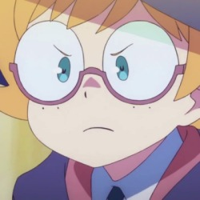

COMPUTER SCIENCE AND ENGINEERING STUDENT @ IST
she/her
Designed and built by @leonorv using GitHub Pages
I am a computer science student living in Lisbon, currently finishing my BSc at Instituto Superior Técnico. At the moment I'm affiliated with NEIIST's GCE, as manager of the interviews department. We've had the chance to talk to professionals and academics in the world of IT and various areas of computer science research, all of those available on our site. I also work with QueerIST, helping in queer-related event planning. It's good fun.
My current interests span web design and development, and cybersecurity. I've been busy trying to increase my knowledge of programming languages I've never touched before.
I like jazz, books, and watching unnecessarily long video essays.
I've hosted here a couple of projects for personal use or that I made to teach myself something, they're currently extremely buggy but feel free to use them.
| Team Maker | A simple team maker in js that allows for teams of different sizes | CODE |
| Pride Snake | A rainbow colored snake clone | CODE |